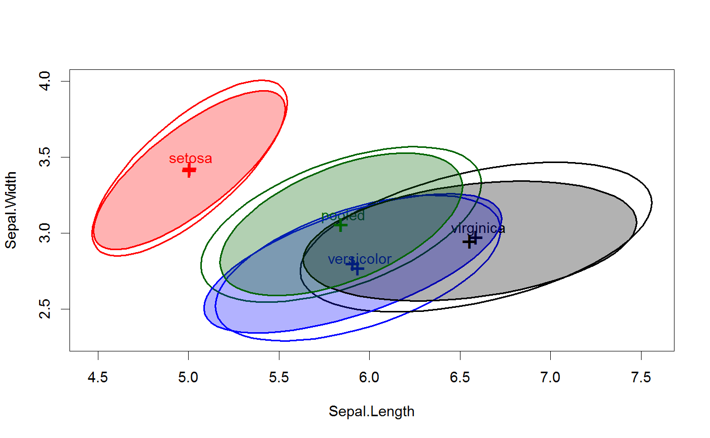
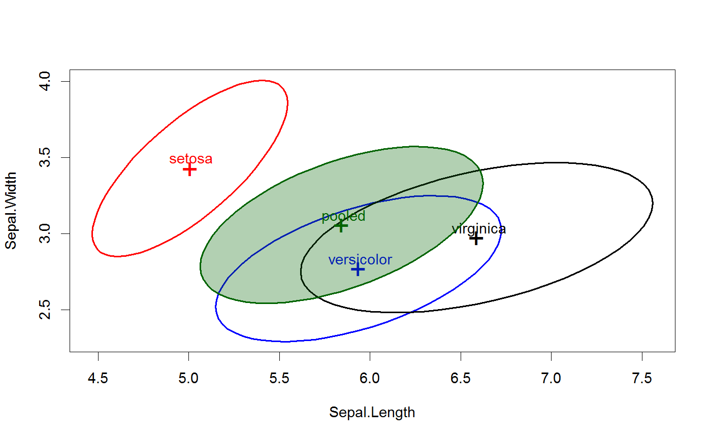
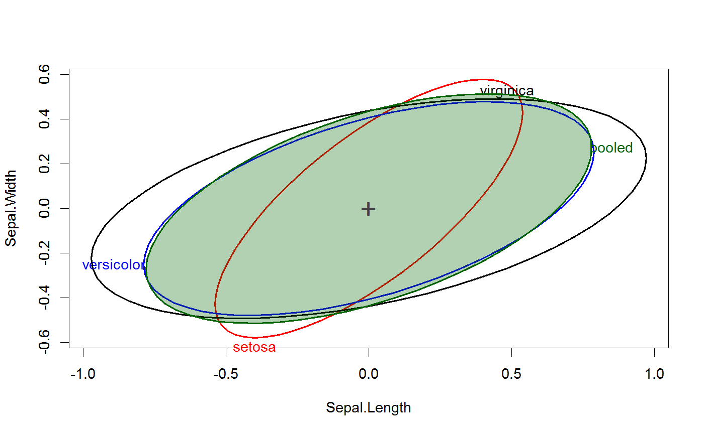

Draw classical and robust covariance ellipses for one or more groups
The function draws covariance ellipses for one or more groups
and optionally for the pooled total sample. It
uses either the classical product-moment covariance estimate, or a
robust alternative, as provided by cov.rob.
Provisions are provided to do this for more than two variables,
in a scatterplot matrix format.
covEllipses(x, ...) # S3 method for boxM covEllipses(x, ...) # S3 method for data.frame covEllipses(x, group, pooled = TRUE, method = c("classical", "mve", "mcd"), ...) # S3 method for matrix covEllipses(x, group, pooled = TRUE, method = c("classical", "mve", "mcd"), ...) # S3 method for default covEllipses(x, means, df, labels = NULL, variables = 1:2, level = 0.68, segments = 60, center = FALSE, center.pch = "+", center.cex = 2, col = getOption("heplot.colors", c("red", "blue", "black", "darkgreen", "darkcyan", "brown", "magenta", "darkgray")), lty = 1, lwd = 2, fill = FALSE, fill.alpha = 0.3, label.pos = 0, xlab, ylab, vlabels, var.cex=2, main = "", xlim, ylim, axes = TRUE, offset.axes, add = FALSE, ...)
Arguments
| x | The generic argument. For the default method, this is a list of covariance matrices.
For the |
|---|---|
| group | a factor defining groups, or a vector of length |
| pooled | Logical; if |
| method | the covariance method to be used: classical product-moment ( |
| means | For the default method, a matrix of the means for all groups (followed by the grand means, if |
| df | For the default method, a vector of the degrees of freedom for the covariance matrices |
| labels | Either a character vector of labels for the groups, or |
| variables | indices or names of the response variables to be plotted;
defaults to |
| level | equivalent coverage of a data ellipse for normally-distributed
errors, defaults to |
| segments | number of line segments composing each ellipse; defaults to
|
| center | If |
| center.pch | character to use in plotting the centroid of the data;
defaults to |
| center.cex | size of character to use in plotting the centroid of the data;
defaults to |
| col | a color or vector of colors to use in plotting ellipses
--- recycled as necessary
A single color can be given, in which case it is used for all ellipses.
For convenience, the default colors for all plots produced in a given session can be changed
by assigning a color vector via |
| lty | vector of line types to use for plotting the ellipses; the first is
used for the error ellipse, the rest --- possibly recycled --- for
the hypothesis ellipses; a single line type can be given. Defaults to
|
| lwd | vector of line widths to use for plotting the ellipses; the first is
used for the error ellipse, the rest --- possibly recycled --- for
the hypothesis ellipses; a single line width can be given. Defaults to
|
| fill | A logical vector indicating whether each ellipse should be filled or not. The first value is used for the error ellipse, the rest --- possibly recycled --- for the hypothesis ellipses; a single fill value can be given. Defaults to FALSE for backward compatibility. See Details below. |
| fill.alpha | Alpha transparency for filled ellipses, a numeric scalar or vector of values
within |
| label.pos | Label position, a vector of integers (in |
| xlab | x-axis label; defaults to name of the x variable. |
| ylab | y-axis label; defaults to name of the y variable. |
| vlabels | Labels for the variables can also be supplied through this argument, which is more convenient
when |
| var.cex | character size for variable labels in the pairs plot |
| main | main plot label; defaults to |
| xlim | x-axis limits; if absent, will be computed from the data. |
| ylim | y-axis limits; if absent, will be computed from the data. |
| axes | Whether to draw the x, y axes; defaults to |
| offset.axes | proportion to extend the axes in each direction if computed from the data; optional. |
| add | if |
| … | Other arguments passed to the default method for |
Details
These plot methods provide one way to visualize possible heterogeneity of within-group covariance matrices in a one-way MANOVA design. When covariance matrices are nearly equal, their covariance ellipses should all have the same shape. When centered at a common mean, they should also all overlap.
The can also be used to visualize the difference between classical and robust covariance matrices.
Value
Nothing is returned. The function is used for its side-effect of producing a plot.
See also
Examples
data(iris) # compare classical and robust covariance estimates covEllipses(iris[,1:4], iris$Species)covEllipses(iris[,1:4], iris$Species, fill=TRUE, method="mve", add=TRUE, labels="")#> #> Box's M-test for Homogeneity of Covariance Matrices #> #> data: iris[, 1:4] #> Chi-Sq (approx.) = 140.94, df = 20, p-value < 2.2e-16 #>covEllipses(x, fill=c(rep(FALSE,3), TRUE) )covEllipses(x, fill=c(rep(FALSE,3), TRUE), center=TRUE, label.pos=1:4 )# method for a list of covariance matrices cov <- c(x$cov, pooled=list(x$pooled)) df <- c(table(iris$Species)-1, nrow(iris)-3) covEllipses(cov, x$means, df, label.pos=3, fill=c(rep(FALSE,3), TRUE))covEllipses(cov, x$means, df, label.pos=3, fill=c(rep(FALSE,3), TRUE), center=TRUE)# scatterplot matrix version covEllipses(iris[,1:4], iris$Species, fill=c(rep(FALSE,3), TRUE), variables=1:4, fill.alpha=.1)